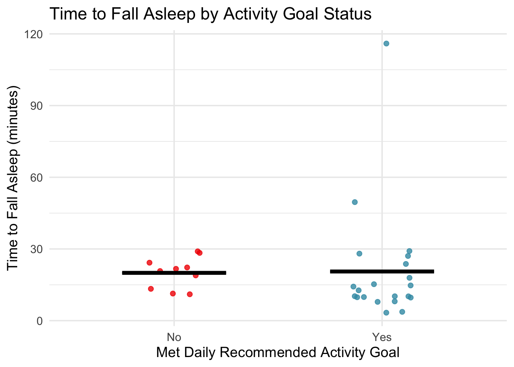

── Attaching core tidyverse packages ──────────────────────── tidyverse 2.0.0 ──
✔ dplyr 1.1.4 ✔ readr 2.1.5
✔ forcats 1.0.0 ✔ stringr 1.5.1
✔ ggplot2 3.5.2 ✔ tibble 3.2.1
✔ lubridate 1.9.4 ✔ tidyr 1.3.1
✔ purrr 1.0.4
── Conflicts ────────────────────────────────────────── tidyverse_conflicts() ──
✖ dplyr::filter() masks stats::filter()
✖ dplyr::lag() masks stats::lag()
ℹ Use the conflicted package (<http://conflicted.r-lib.org/>) to force all conflicts to become errors
library(here)
here() starts at /Users/fionajeweler/Library/Containers/com.hp.SmartMac/Data/Documents/ENVS 193DS/Github/ENVS-193DS_homework-03
library(gt)library(janitor)
Attaching package: 'janitor'
The following objects are masked from 'package:stats':
chisq.test, fisher.test
library(readr)
Part 2: Problems
To compare how quickly I fall asleep on days when I meet my recommended activity goal versus when I do not, I will calculate the mean time to fall asleep for each group (“Yes” vs. “No” under “Meet daily recommended activity goal”). This allows me to compare average sleep onset times between more and less active days. Comparing means is informative because if there is a noticeable difference, it could suggest a relationship between physical activity levels and how quickly I fall asleep.
# Reading in datadata <-read_csv(here("data","Datasheet.csv"), col_names =TRUE)
New names:
Rows: 32 Columns: 8
── Column specification
──────────────────────────────────────────────────────── Delimiter: "," chr
(7): ...2, ...3, ...4, ...5, ...6, ...7, ...8 lgl (1): ...1
ℹ Use `spec()` to retrieve the full column specification for this data. ℹ
Specify the column types or set `show_col_types = FALSE` to quiet this message.
• `` -> `...1`
• `` -> `...2`
• `` -> `...3`
• `` -> `...4`
• `` -> `...5`
• `` -> `...6`
• `` -> `...7`
• `` -> `...8`
data <-read_csv(here("data","Datasheet.csv"), skip =1)
New names:
Rows: 31 Columns: 8
── Column specification
──────────────────────────────────────────────────────── Delimiter: "," chr
(3): Date, Time inactive, Meet daily recommended activity goal dbl (2): Time to
fall asleep (minutes), Caffeine Intake (ml) num (2): Total calories burned,
Steps lgl (1): ...1
ℹ Use `spec()` to retrieve the full column specification for this data. ℹ
Specify the column types or set `show_col_types = FALSE` to quiet this message.
• `` -> `...1`
data <-read_csv(here("data","Datasheet.csv"), skip =1) |>select(-1)
New names:
Rows: 31 Columns: 8
── Column specification
──────────────────────────────────────────────────────── Delimiter: "," chr
(3): Date, Time inactive, Meet daily recommended activity goal dbl (2): Time to
fall asleep (minutes), Caffeine Intake (ml) num (2): Total calories burned,
Steps lgl (1): ...1
ℹ Use `spec()` to retrieve the full column specification for this data. ℹ
Specify the column types or set `show_col_types = FALSE` to quiet this message.
• `` -> `...1`
#Clean column namesdata <- janitor::clean_names(data)#Renaming column names data <- data %>%rename(time_to_sleep = time_to_fall_asleep_minutes,met_goal = meet_daily_recommended_activity_goal )# Creating plot ggplot(data, aes(x = met_goal, y = time_to_sleep, color = met_goal)) +geom_jitter(width =0.15, size =2, alpha =0.8) +stat_summary(fun = mean, geom ="crossbar", width =0.5,color ="black", fatten =3, size =0.6,aes(ymin =after_stat(y), ymax =after_stat(y))) +# updated for deprecationscale_color_manual(values =c("Yes"="#3B9AB2", "No"="#F21A00")) +labs(x ="Met Daily Recommended Activity Goal",y ="Time to Fall Asleep (minutes)",title ="Time to Fall Asleep by Activity Goal Status" ) +theme_minimal(base_size =14) +theme(legend.position ="none")
Warning: Using `size` aesthetic for lines was deprecated in ggplot2 3.4.0.
ℹ Please use `linewidth` instead.

Figure 1. Faster sleep onset tends to occur on days when activity goals are met. Each red or blue dot represents a single day, with the red circles showing days when the activity goal was not met and blue circles showing days when it was met. The black horizontal bars in each group represent the mean time to fall asleep. On average, participants fell asleep slightly longer on days when the daily recommended activity goal was met.
# Creating summary tablesummary_table <- data %>%group_by(met_goal) %>%summarise(mean_time_to_sleep =round(mean(time_to_sleep, na.rm =TRUE), 1),n =n() ) %>%rename(`Met Activity Goal`= met_goal,`Mean Time to Fall Asleep (minutes)`= mean_time_to_sleep,`Sample Size`= n )# Generating GT tablesummary_table %>%gt() %>%tab_header(title ="Average Time to Fall Asleep by Activity Goal Status" )
Average Time to Fall Asleep by Activity Goal Status